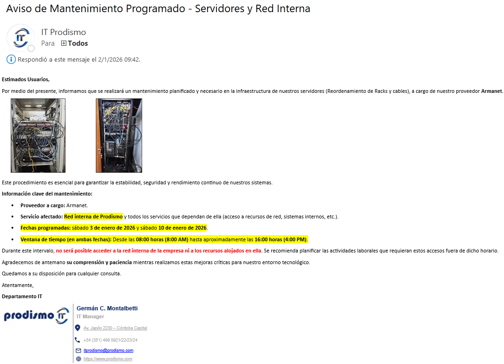

Política de Comunicación de Cambios
1 OBJETIVO
Establecer un marco formal y estandarizado para la comunicación efectiva de cambios relevantes que impacten en el Sistema de Gestión de Seguridad de la Información (SGSI), la infraestructura crítica, los procesos operativos o el entorno de seguridad. El objetivo es garantizar que todas las partes interesadas internas y externas pertinentes estén informadas de manera oportuna, clara y consistente, facilitando la preparación, mitigando riesgos y asegurando la continuidad del negocio. Esta política cumple con los requisitos de la norma ISO/IEC 27001:2022 Anexo A.8.32 (Gestión de cambios) y los criterios de evaluación TISAX sobre gestión de cambios y concienciación.
2 ALCANCE
Esta política aplica a:
- Todos los cambios clasificados como Significativos o Críticos según el Procedimiento de Gestión de Cambios de PRODISMO SRL.
- Todas las áreas de la organización.
- Todo el personal interno: empleados, temporales y pasantes.
- Terceros críticos y proveedores de servicios cuyos cambios puedan impactar en la seguridad de la información de la organización.
- Todos los activos de información y sistemas cubiertos por el alcance del SGSI.
3 REFERENCIAS NORMATIVAS
- ISO/IEC 27001:2022 - Anexo A.8.32
- ISO/IEC 27002:2022 - Guía para los controles de seguridad.
- Marco de evaluación TISAX.
- P521-IT-1 Procedimiento de Gestión de Cambios.
- MC511-IT-1 Política de Clasificación de Datos/Información.
4 DEFINICIONES
Cambio Crítico:
Modificación con un alto impacto potencial en la seguridad, disponibilidad o integridad de los sistemas o información crítica. Requiere aprobación formal y comunicación amplia.
Cambio Significativo:
Modificación con un impacto medio en operaciones o seguridad. Requiere comunicación a las áreas afectadas.
Cambio Menor:
Modificación de bajo impacto y riesgo. Su comunicación puede ser opcional o realizarse a través de canales informales.
Parte Interesada (Stakeholder):
Cualquier individuo, grupo u organización que pueda afectar, ser afectado o percibirse a sí mismo como afectado por un cambio.
5 RESPONSABLES
Alta Dirección:
Aprobar la política y asegurar que se dispone de los recursos necesarios para su implementación.
Responsable de Seguridad de la Información (RSI):
Supervisar el cumplimiento de la política, auditar su efectividad y actuar como punto de escalada para problemas relacionados con la comunicación.
Responsables de Área / Owners de Proceso:
Identificar a las partes interesadas afectadas por un cambio dentro de su área y validar la idoneidad de los mensajes de comunicación.
Departamento de Comunicación / RR.HH. (o RSI en su defecto):
Evaluar el impacto de los cambios y dictaminar el plan de comunicación asociado (qué, a quién, cuándo y cómo comunicar).
Apoyar en la redacción de comunicados claros y consistentes, especialmente para cambios que afecten a toda la organización.
Todos los Empleados:
Estar atentos a los canales oficiales de comunicación y acatar las instrucciones proporcionadas en los comunicados de cambio.
6 PROTOCOLO DE NOTIFICACIÓN Y COMUNICACIÓN
6.1. Clasificación del Cambio y Plan de Comunicación
Todo cambio propuesto debe ser evaluado por el Departamento de IT o el gestor de cambios, quien determinará su clasificación y definirá el plan de comunicación correspondiente:
| Tipo de Cambio | Impacto/Riesgo | Horario Preferente | Antelación Mínima de Comunicación | Audiencia Objetivo |
|---|---|---|---|---|
| Crítico | Alto | Fuera de horario laboral | 5 días hábiles | Toda la organización y terceros afectados |
| Significativo | Medio | Fin de jornada | 3 días hábiles | Áreas/Usuarios directamente afectados |
| Menor | Bajo | Cualquiera | 24 horas o post-implantación | Usuarios específicos u opcional |
6.2. Contenido Mínimo del Comunicado
Todo comunicado de cambio debe incluir, como mínimo, la siguiente información:
- Asunto: Claro e indicativo del cambio (ej., "[CRÍTICO] Mantenimiento Servidor Correo - Corte de servicio").
- Naturaleza del Cambio: Descripción clara y concisa de lo que se va a modificar.
- Motivo/Razón del Cambio: Justificación del porqué se realiza.
- Impacto Esperado: Qué servicios, sistemas o procesos se verán afectados y de qué manera (interrupción, lentitud, etc.).
- Ventana de Mantenimiento: Fecha y hora exactas de inicio y fin previsto del cambio.
- Acciones Requeridas por el Usuario: Instrucciones específicas (ej., "guardar trabajo y cerrar sesiones", "reiniciar equipo después de las 18:00hs").
- Punto de Contacto: Persona o grupo de soporte al que dirigirse en caso de incidencias o dudas relacionadas con el cambio.
6.3 Ejemplo de Comunicado

7 CANALES DE COMUNICACIÓN AUTORIZADOS
La comunicación oficial de cambios se realizará exclusivamente a través de los siguientes canales corporativos seguros:
1. Correo Electrónico Corporativo (Microsoft Outlook):
- Uso: Canal principal para comunicados formales.
- Configuración: Se utilizarán las listas de distribución predefinidas (ej., "todos@prodismo.com", "itprodismo@prodismo.com") o grupos de destinatarios específicos. Para cambios críticos, se utilizará la opción "Confirmación de lectura".
2. Microsoft Teams:
- Uso: Canal complementario para recordatorios, para comunicar cambios menores o para debates en tiempo real sobre un cambio.
- Configuración: Se publicarán anuncios en los canales generales de la empresa o de los departamentos afectados. Se utilizará la función "@mención" al canal o equipo correspondiente para asegurar la visibilidad.
3. Reuniones (Presenciales o Virtuales):
- Uso: Para cambios extremadamente críticos o complejos que requieran una explicación detallada y sesión de preguntas y respuestas.
Práctica Prohibida
Queda prohibido utilizar canales no oficiales (como WhatsApp personal, correos personales o comunicaciones verbales informales no documentadas) como único medio para comunicar cambios significativos o críticos.
8 REGISTRO Y EVIDENCIA
- Todas las comunicaciones de cambio deben ser archivadas y almacenadas en una ubicación designada (ej., lista de correo, sistema de ticketing STI) como evidencia para auditorías.
- El registro debe incluir: el comunicado enviado, la fecha/hora de envío, la audiencia destinataria y cualquier confirmación de lectura requerida.
9 ANEXOS
[Documento de clasificación de la información y datos]
[Instrucciones detalladas para la gestión de transferencia segura de información]
[Instrucciones detalladas para la gestión de Cambios]
10 AUDITORÍA DEL DOCUMENTO
- Esta política será revisada anualmente por el RSI para asegurar su vigencia y efectividad.
- La efectividad del proceso de comunicación de cambios se auditará durante las auditorías
internas del SGSI y las evaluaciones TISAX, mediante:
- Encuestas de satisfacción a las partes interesadas.
- Revisión de muestras de comunicados y sus registros.
- Análisis de incidentes post-cambio para determinar si una comunicación deficiente fue una causa raíz.
11 REVISIÓN DEL DOCUMENTO
Esta política será revisada anualmente o en respuesta a cambios significativos en el negocio, legales, regulatorios o tecnológicos para asegurar su idoneidad, adecuación y eficacia continua.
| Rev. N° | Fecha | Descripción |
|---|---|---|
| 0 | 25/8/2025 | Primera Emisión del documento |
| 1 | 6/1/2026 | Actualización general del documento |